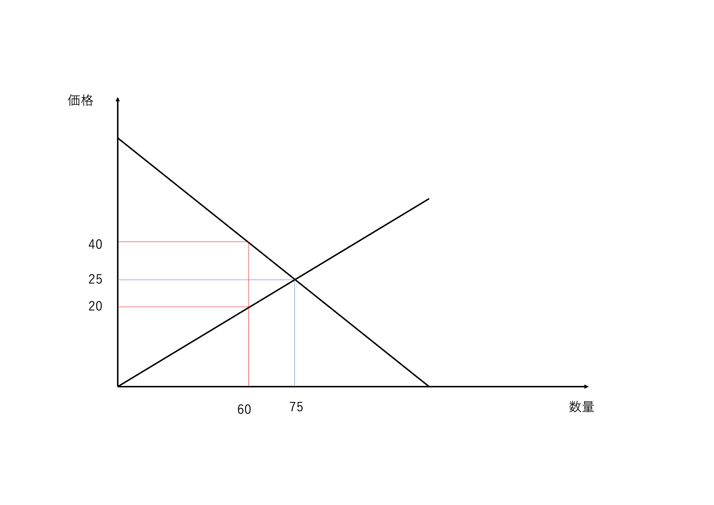

経済学で出る数学
ワークブックでじっくり攻める：応用問題
買手独占
【問】 コーヒー豆の需要関数が
\[
D(p)=100-p
\]
であるとしよう．
また供給関数が
\[
S(p)=3p
\]
であるとする．
コーヒー豆の市場は需要者（消費者）たるS社の買手独占であるとする．
(1) 均衡価格とその時の消費者余剰を求めなさい
(2) S社が価格を$p=20$にした時の消費者余剰を求めなさい
【解答】
- 均衡価格は$D(p)=S(p)$を解けばよいので，$p=25$である．
消費者余剰は$q=75$であることから，$\dfrac{(100-25)\times 75}{2}=2812.5$である．
- 均衡価格から$p=20$に価格を買手が引き下げた場合，供給量は$q=60$となることから，消費者余剰は，$\dfrac{(80+20)\times 60}{2}=3000$となり，買手の余剰が増える．

【解答終】
【Further Reading】
田中 久稔『大学の人気講義でよく分かる「ミクロ経済学」超入門』SBクリエイティブ（2022）
ふろく（２）応用問題 一覧へ